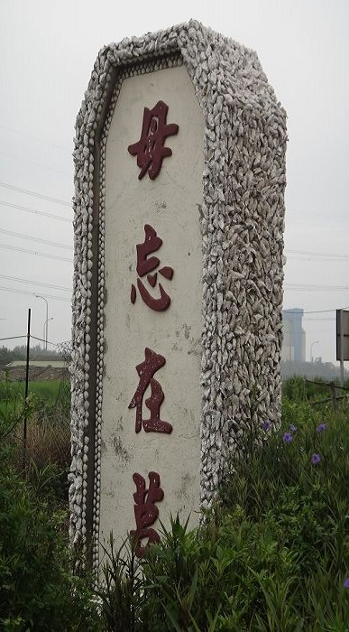
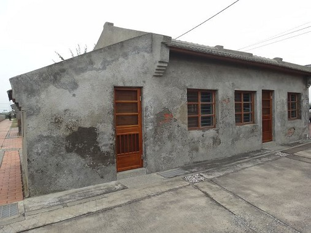
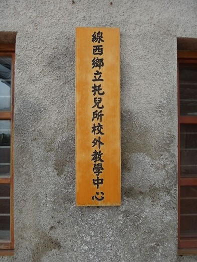
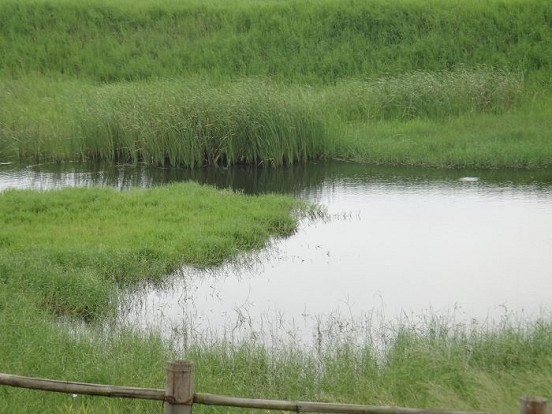
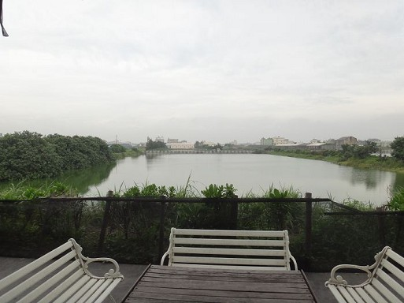
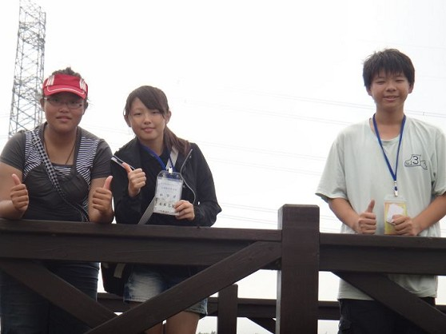
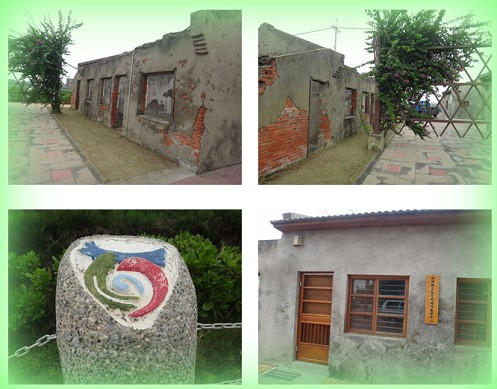
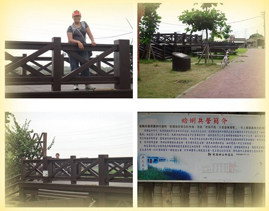
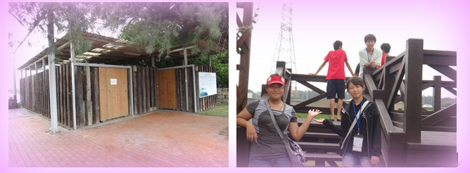

1960年，政府為了要安置來台退役的軍人，退輔會選擇到線西設置蛤蜊養殖
場，可以讓退役人員看管以自足，為了解決他們的住宿問題，於是就在那邊興建了大量的營舍，當時移居到這裡的總共有一百多個人，並同時讓他們可以保護海岸線
的安全，之後，因為彰濱工業區的開發，所以海岸線往外擴展了好幾公里遠，因此海防營舍就再也不緊鄰海岸線了。之後原本經營的蚵蜊養殖場也因為西濱公路的開
闢，所以失去了原有的功能，駐守於此的老兵也漸漸的搬離，原本熱鬧的營舍也變成冷清的破舊房屋了。
這個碑是用蛤蠣做出來的。

這棟房子以前有人住，現在沒人住拿來當教室用。

拿來當戶外地點用。

時常在這裡可以看到有鳥類在這裡活動。

這裡時常可以看到我們不知道的鳥類。





心得分享:
這次來到了蛤蜊兵營，來到蛤蜊兵營後，我們四處走走看看，雖然這些營舍以前都是一些退役老兵在住的，可是，現在卻已經變成了現
在這個樣子，因為，原本在這裡的老兵在經營的蛤蜊養殖場，都因為西濱公路的開闢，而失去了原有的功能，而這些老兵也慢慢地搬離此地，所以使得這裡這麼的破爛。
<--回線西村首頁 |